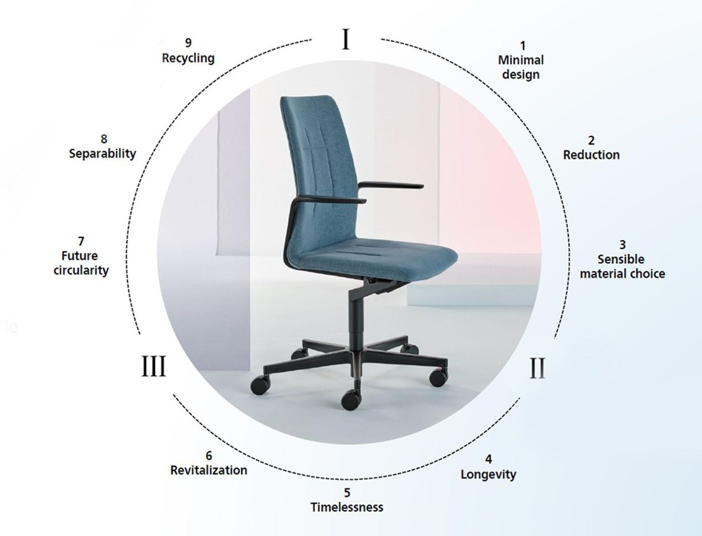
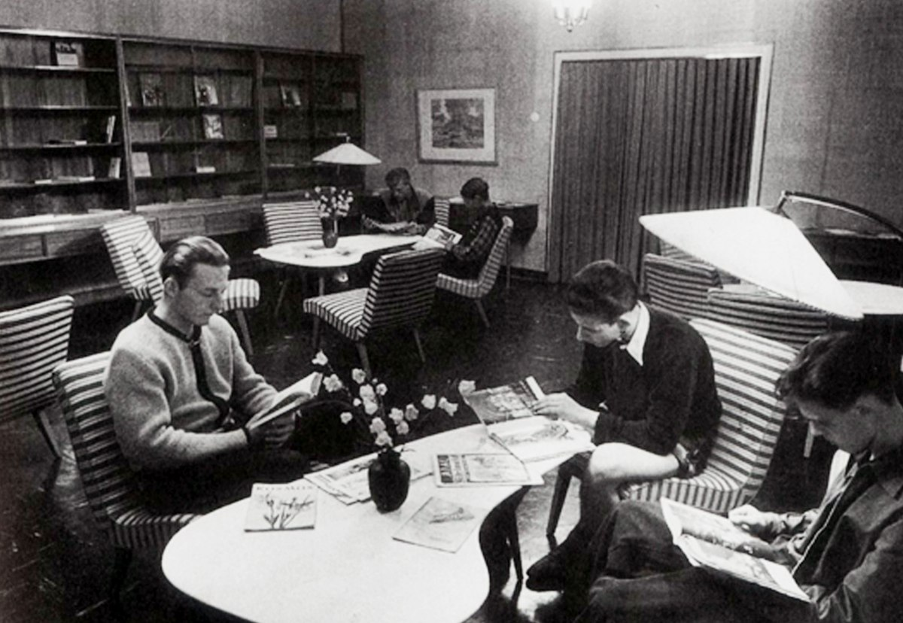
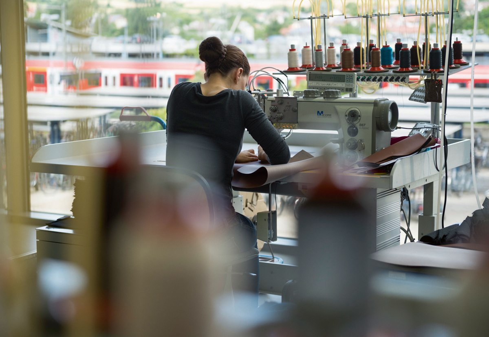

Roots in Stuttgart
The founding of Wilhelm Knoll’s leather business.
Source ↗Thoughtful design considers the entire life of a product. Explore the principles, craftsmanship and materials behind lasting furniture.
A long-term perspective
The founding of Wilhelm Knoll’s leather business.
Source ↗A framework for considering the product life cycle.
Source ↗The introduction of a certified environmental management system.
Source ↗
Product Life Cycle
Consider the journey from material selection and manufacture to use, care and a future beyond the first owner.
Learn more on the original
Our approach
Natural materials and careful production are part of a commitment to durable furniture. Explore the official approach to environmental and social responsibility.
Learn more on the original
Environmental management
Walter Knoll reports a certified environmental management system introduced in 2019. The official site provides details of its framework and certificates.
Learn more on the original